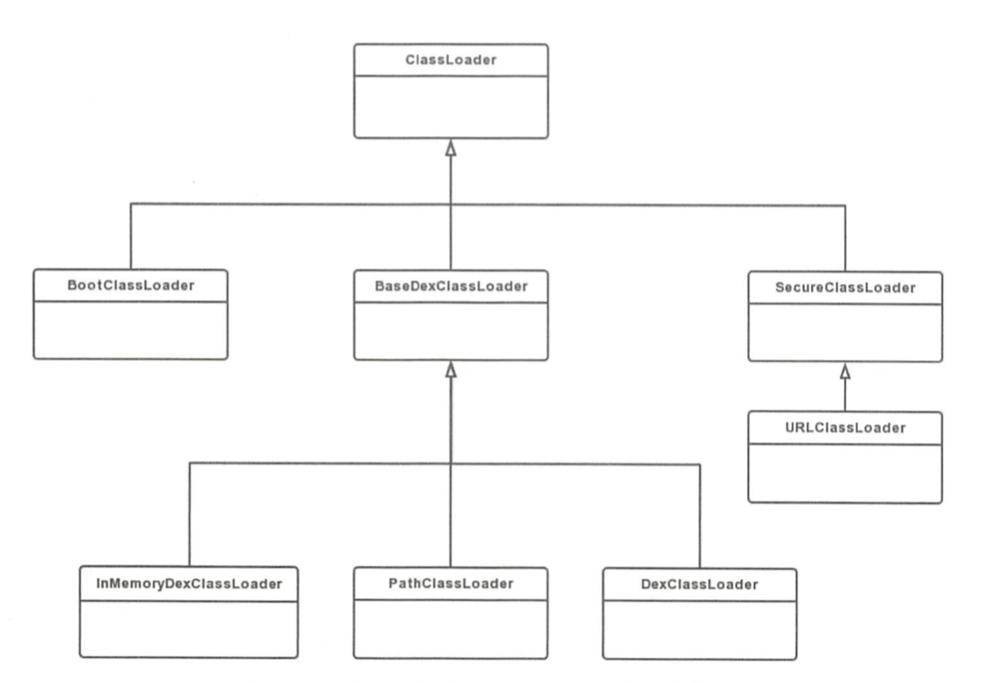
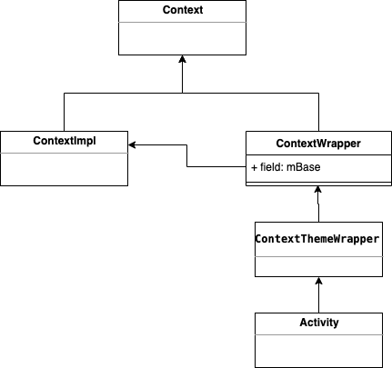
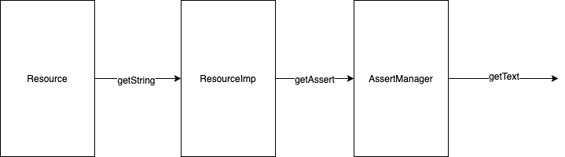

前言
对于Tinker的原理认识, 一直停留在粗放的认知层面上, 但是对于代码修复的细节原理, 关于资源修复原理, dex差分包的算法原理都没有亲自看一遍源码, 因此关于Tinker会分为两篇进行源码解读工作.
Tinker代码修复原理
补丁生效, 是在我们应用重启后生效的, 我们可以从TinkerApplication开始看下源码
1 | private void onBaseContextAttached(Context base) { |
Tinker在application启动走到attachBaseContext时, 会调用onBaseContextAttached, 最后走到loadTinker .loadTinker主要做的就是通过TinkerApplication的类加载器去加载loaderClassName, 如果开发者没有自定义配置, 那么这里加载的类就是TinkerLoader, 然后调用他的tryLoad方法
1 | // TinkerApplication.java |
1 | // TinkerLoader.java |
1 | // TinkerLoader.java |
TinkerLoader#tryLoadPatchFilesInternal主要是做以下几件事情:
- Tinker 功能的验证(包括 Tinker是否打开, 清单文件的获取和校验)
- 当前执行进程的判断, 当前执行路径需要在主进程内
- 补丁文件, 补丁内容(包括dex, resource, so)与清单的校验, 并将相关信息对象存入对应列表对象
- 代码补丁的加载(TinkerDexLoader.loadTinkerJars)
- 资源补丁的加载(TinkerResourceLoader.loadTinkerResources)
- 杀死主进程以外的进程
基于大量代码, 这里就不列出来了, 在TinkerDexLoader.loadTinkerJars主要是针对如果设置了tinkerLoadVerifyFlag, 则会进行一些md5安全校验, 然后针对OAT做的一些补丁优化处理, 然后通过SystemClassLoaderAdder.installDexes执行安装补丁的工作1
2
3
4
5
6
7
8
9
10
11
12
13
14
15
16
17
18
19
20
21
22
23
24
25
26
27
28
29
30
31
32
33
34
35
36
37// SystemClassLoaderAdder.java
public static void installDexes(Application application, ClassLoader loader, File dexOptDir, List<File> files, boolean isProtectedApp)
throws Throwable {
Log.i(TAG, "installDexes dexOptDir: " + dexOptDir.getAbsolutePath() + ", dex size:" + files.size());
if (!files.isEmpty()) {
// 针对dex进行排序
files = createSortedAdditionalPathEntries(files);
// 获取TinkerDexLoader的类加载器, 因为没有指定特定的类加载器处理, 所以用的应该是DVM下的PathClassloade
ClassLoader classLoader = loader;
// 非加固应用的apk并且sdk大于等于24
if (Build.VERSION.SDK_INT >= 24 && !isProtectedApp) {
classLoader = NewClassLoaderInjector.inject(application, loader, dexOptDir, files);
} else {
//because in dalvik, if inner class is not the same classloader with it wrapper class.
//it won't fail at dex2opt
if (Build.VERSION.SDK_INT >= 23) {
V23.install(classLoader, files, dexOptDir);
} else if (Build.VERSION.SDK_INT >= 19) {
V19.install(classLoader, files, dexOptDir);
} else if (Build.VERSION.SDK_INT >= 14) {
V14.install(classLoader, files, dexOptDir);
} else {
V4.install(classLoader, files, dexOptDir);
}
}
//install done
sPatchDexCount = files.size();
Log.i(TAG, "after loaded classloader: " + classLoader + ", dex size:" + sPatchDexCount);
if (!checkDexInstall(classLoader)) {
//reset patch dex
SystemClassLoaderAdder.uninstallPatchDex(classLoader);
throw new TinkerRuntimeException(ShareConstants.CHECK_DEX_INSTALL_FAIL);
}
}
}
根据不同的sdk编译版本, tinker做了适配处理, 我们看下V23.install(classLoader, files, dexOptDir)1
2
3
4
5
6
7
8
9
10
11
12
13
14
15
16
17
18
19
20
21
22
23
24// V23.java
private static void install(ClassLoader loader, List<File> additionalClassPathEntries,
File optimizedDirectory)
throws IllegalArgumentException, IllegalAccessException,
NoSuchFieldException, InvocationTargetException, NoSuchMethodException, IOException {
/* The patched class loader is expected to be a descendant of
* dalvik.system.BaseDexClassLoader. We modify its
* dalvik.system.DexPathList pathList field to append additional DEX
* file entries.
*/
Field pathListField = ShareReflectUtil.findField(loader, "pathList");
Object dexPathList = pathListField.get(loader);
ArrayList<IOException> suppressedExceptions = new ArrayList<IOException>();
ShareReflectUtil.expandFieldArray(dexPathList, "dexElements", makePathElements(dexPathList,
new ArrayList<File>(additionalClassPathEntries), optimizedDirectory,
suppressedExceptions));
if (suppressedExceptions.size() > 0) {
for (IOException e : suppressedExceptions) {
Log.w(TAG, "Exception in makePathElement", e);
throw e;
}
}
}
可以看到, 最终, Tinker是通过hook 类加载器内的的pathList对象, 通过调用`DexPathList#makeDexElements, 替换DexPathList对象内的dexElements集合对象, 至此就算Dex补丁加载完成.
Tinker的代码补丁加载代码流程我们已经过了一遍, 回头我们再看下为什么代码补丁修复的原理, 首先我们需要理解类加载机制以及Android中的类加载器.
类加载机制以及Android的类加载器
我们都知道Android的类加载机制, 都是沿用了JVM的双亲委派模型, 那么什么是双亲委派模型?
双亲委派模型要求除了顶层的启动类加载器外, 其余的类加载器都应有自己的父类加载器. 当一个类加载器收到了类加载的请求, 它首先不会自己去尝试加载这个类, 而是把这个请求委派给父类加载器去完成, 每一个层次的类加载器都是如此, 因此所有的加载请求最终都应该传送到最顶层的启动类加载器中, 只有当父加载器反馈自己无法完成这个加载请求(它的搜索范围中没有找到所需的类)时, 子加载器才会尝试自己去完成加载. –<深入理解Java虚拟机>
要知道DVM中是否也是沿用双亲委派机制, 我们可以看下代码
1 | // /libcore/ojluni/src/main/java/java/lang/ClassLoader.java |
可以看出, 在Android中当需要加载一个类的时候, 也是沿用一样的机制, 当类已经加载, 则使用被加载的类, 否则调用父加载器的loadClass, 如果父加载器为空, 则使用启动类加载器作为父加载器, 如果父类加载器加载失败, 才调用自己的findClass方法进行加载.
Android的类加载器与JVM中的类加载器区别在于, 它加载的是Dex, 而不是Class文件, 我们看下8.0系统下Android类加载器的继承情况

通过日志打印, 我们可以看到我们主要用到的ClassLoader是PathClassLoader
1 | // /libcore/dalvik/src/main/java/dalvik/system/PathClassLoader.java |
PathClassLoader是用来Android用来加载应用类和系统类的加载类, 构造函数的第一个入参dexPath是dex相关文件路径集合, 通过”:”分隔,librarySearchPath表示so文件路径集合, 用文件分隔符分隔, 可能为空.它继承于BaseDexClassLoader, 具体方法由父类实现, 以下截取了部分代码,具体源码可以看这里
1 | public class BaseDexClassLoader extends ClassLoader { |
根据源码可以看到, BaseDexClassLoader在创建的时候, 内部维护了一个DexPathList对象, 当查找类, Resource, Dex或So的时候, 都是通过DexPathList间接获取
1 | // /libcore/dalvik/src/main/java/dalvik/system/DexPathList.java |
PathClassLoader在找一个类的时候, 通过DexPathList#findClass, 会内部对dexElements数组进行遍历, 实际通过Element#findClass去找类, 如果找到则立即返回, 而dexElements数组对象, 在DexPathList初始化时, 通过makeDexElements方法构造对应数组, 这里Element是DexPathList的静态内部类, 它的findClass方法最终调用到了DexFile#loadClassBinaryName方法
1 | /*package*/ static class Element { |
由此我们大概理顺了Tinker代码修复的原理:
- 根据类加载机制, 当一个类被加载后, 当再次请求加载类时, 会先判断对应请求类是否已加载, 如果已加载, 则直接返回
- 则Tinker只要保证包含修复代码的dex在原来的dex之前被加载, 即可保证修复生效
- 因为Tinker会针对dex进行排序, 新dex放在之前, 自行生成的testDex放在最后
- 通过hook获取
BaseDexClassLoader内部的pathList对象, 通过DexPathList的makeDexElements方法重新设置内部elements数组, 使得ClassLoader在调用findClass的时候, 可以首先去找到补丁相关的类, 使得后面orginal class不会被加载
Tinker资源修复
资源加载与获取流程
在看Tinker资源修复原理之前, 我们需要了解下资源的获取和加载原理.当我们在调用getResources时, 实际调用的是内部mBase的getResources, 已知, Activity继承于ContextWrapper, 它内部维护一个ContextImpl类的mBase对象(见下图), 所以我们主要看的是ContextImpl#getResource方法
ContextImpl#getResource是获取内部的mResources,它是通过ContextImpl#createResources赋值生成, 而它的内部是通过ResourceManager去获取Resource
1 | private static Resources createResources(IBinder activityToken, LoadedApk pi, String splitName, |
ResourceManager是个单例, 内部维护了以ResourcesKey为key的ResourcesImpl缓存集合, 当调用getResources的时候, 首先会去match缓存中的resourceImpl, 当无法命中的情况下, 则创建新的ResourceImpl对象, ResourceImpl是Resource的具体实现
1 | public Resources getResources(@Nullable IBinder activityToken, |
我们可以看下新建Resource的相关代码
1 | private Resources getOrCreateResources(@Nullable IBinder activityToken, |
1 | private ResourcesImpl createResourcesImpl(@NonNull ResourcesKey key) { |
1 | protected AssetManager createAssetManager(@NonNull final ResourcesKey key) { |
可以看到, 创建Resource, 主要是新建AssertManager对象, 通过addAssetPath方法新增资源对应路径维护, 并将对应实例由新建的ResourceImpl对象内部持有. 而Resource的真正实现类为ResourceImpl, 以Resource#getString为例, 它通过mResourcesImpl.getAssets().getResourceText(id)实现, 可以看出, 针对资源的访问, 最终都是与AssertManager有关, 相关简化流程可看下图

那么如果我们来做资源修复, 应该就是需要针对ResourceManager单例里维护的Resources缓存进行处理, 使得对应创建Resource的时候, 可以通过AssertManager#addAssetPath新增新的资源路径达到资源修复的效果.下面我们来看下Tinker是怎么做的.
Tinker资源修复
上一大节, 我们知道资源修复相关入口代码在TinkerResourceLoader#loadTinkerResources
1 | public static boolean loadTinkerResources(TinkerApplication application, String directory, Intent intentResult) { |
然后是资源修复的核心代码, 继续往下看
1 | public static void monkeyPatchExistingResources(Context context, String externalResourceFile) throws Throwable { |
可以看出Tinker的资源修复步骤如下:
- 通过hook获取apk描述文件loadedApk, 通过hook设置内部维护mRes为资源补丁路径
- 新建AssetManager, 通过
AssetManager#addAssetPath增加资源补丁路径, 通过hook获取ResourceManager内的resources缓存, hook设置ResourceImpl内持有的mAsset为新建的AssetManager - 清除TypedArrays缓存池, 更新资源
参考
- 《Android 进阶解密》
- 《深入理解JVM 第三版》
- Tinker Github Wiki
- Android 热修复 Tinker接入及源码浅析
- Android 资源加载机制剖析
- 插件化资源处理